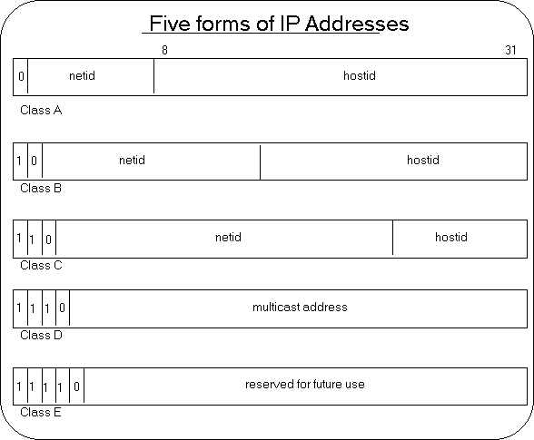
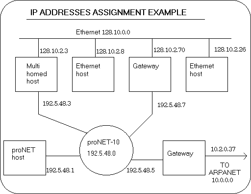
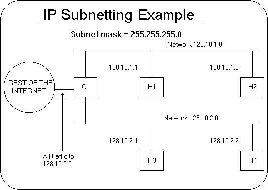

General IP Addressing Architecture
Forms of IP Addresses
Special forms of IP Addresses
IP Addresses assignment example
IP Subnetting
IP Subnetting example
IP - The Next Generation (IPng - IPv6)
IPng - IPv6 addressing
Upgrading IPv4 to IPng - IPv6
General IP Addressing Architecture
IP addresses consist of a 32-bit value.
Usually, for convenience, it is presented in DECIMAL DOT NOTATION:
4 octets (bytes) separated by a dot.
Each physical network has its own unique network address.
Each host has its own unique address.
Routers or gateways have one or more addresses
(depended on the of links they have)
An IP address is therefore built of a network and a host
identifications.
Forms of IP Addresses
There are five forms of IP addresses:
Class A :126 networks, each can have up to (16M-2) nodes.
(1.0.0.0 - 126.0.0.0)
Class B: (16K-2) networks, each can have up to (64K-2) nodes
(127.0.0.0 - 191.255.0.0)
Class C: (2M-2) networks, each can have up to 254 nodes.
(192.0.0.0 - 223.255.255.0)
Class D: a multicast address.
(224.0.0.0 - 240.0.0.0)
Class E: reserved for future use.
(241.0.0.0 - 248.0.0.0)

For example:
The address (binary) - 10000000 00000111 00001111 00000001
has the DECIMAL DOT NOTATION: 128.7.15.1
It belongs to Class B addresses.
Its Network-id is: 128.7
Its Host-id is: 15.1
Special forms of INTERNET Addresses
0.0.0.0 - This host.
0.host_number - host on this net.
255.255.255.255 - Limited broadcast (local net).
net_number.255 - Directed broadcast for the specified net.
127.anything - Loopback (should never appear on the net).
IP Addresses assignment example

IP Subnetting
Subnetting is a Technique used to allow a single IP network
address to span multiple physical networks.
IP hosts should support subnetting.
Subnetting is done by using some of the bits of the host-id part
of the IP address as a physical network identifier.
The subnet mask is used to determine the bits of the network
identifier.
All hosts on the same network should have the same subnet mask.
An example of Subnetting:
The Class B network 128.10.0.0 can be subnetted using the first
8 bits of the host-id, to span 254 different physical networks.
The subnet mask for this case is 255.255.255.0
The subnetworks are: 128.10.1.0, 128.10.2.0, ..., 128.10.254.0 .
Each of the subnetworks can have up to 254 different hosts:
128.10.XXX.1, 128.10.XXX.2, ..., 128.10.XXX.254 .
If there is a need for less physical nets and more hosts in each
one, less host-id bits can be used for subnetting. For example:
With the subnet mask 255.255.254.0, 126 different subnets are
available with up to 510 hosts in each one.
Many Class A and B networks do not contain as many hosts as
they could. This situation causes a lot of address space waste.
Subnetting better utilizes the address space by dividing these
big networks to smaller ones.
IP Subnetting example
Dividing a single Class B network into two subnetworks:

All Gateways except G (Which is physically interconnected between
the networks) route as if there was a single physical network.
IP - The Next Generation (IPng - IPv6)
The growing number of INTERNET hosts causes a shortage in IP
addresses and will eventually consume the entire address space.
The theoretical address space size (2^32 nodes) is largely wasted
due to assignment inefficiencies.
Dividing the address space into classes (A, B and C) had its own
contribution to the inefficiency of addresses assignment.
Changing the IP addressing scheme is a matter concerning all
INTERNET users and is an opportunity for providing additional
functionality to the IP.
The new version of IP is often referred to as IPng:
"INTERNET Protocol: The Next Generation".
Most INTERNET users agreed IPng should have a hierarchical
address structure. This new address structure should be large
enough to meet the needs of the INTERNET community for a very
long time.
There were several proposals for IPng. The most likely to become
a standard were: "Common Architecture for the INTERNET" (CATNIP)
"Simple INTERNET Protocol Plus" (SIPP), and "The TCP/UDP Over
CLNP-Addressed Networks (TUBA) proposals.
The guidelines for choosing one proposals over the others were:
* Current address assignment policies should not be changed.
* There is no need to reclaim assigned network numbers.
* There is no need to renumber most of the INTERNET
Eventually the "Simple INTERNET Protocol Plus (SIPP) Spec.
(128 bit ver)" was adopted as the basis for IPng.
IPng was assigned the name IPv6.
IPng - IPv6 addressing
IPng offers a larger address space for the INTERNET users.
The IP address size will be increased from 32 bits to 128 bits.
This change will allow a much bigger number of nodes than is
available today, with more levels of addressing hierarchy,
and simpler auto-configuration of addresses.
An address size of 128 bits is large enough to support a huge
number of nodes even with the inefficiency of address assignment.
The IP header will be changed. Some fields will be removed
in order to keep the overhead low (in spite of increasing the
number of address bits). Thus, even though the IPv6 addresses are
four times longer than the IPv4 addresses, the IPv6 header is
only twice the size of the IPv4 header.
IPv6 will have a new type of address: "Cluster address", which
will identify topological regions.
A new function in IPv6 is source routing, which together with
Cluster addresses will allow nodes to control their routing in
a more precise way.
Upgrading IPv4 to IPng - IPv6
The transition from IPv4 to IPv6 will be simple and flexible.
The upgrade will be Incremental: Existing IPv4 hosts and Routers
may be upgraded to IPv6 and new hosts and Routers can be
installed independently.
When existing IPv4 hosts or Routers are upgraded, they can
continue to use their current address.
The start-up costs are low and little work is needed to upgrade
existing systems to IPv6.